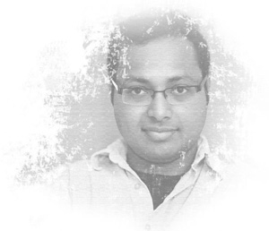

Current position
Lecturer (since 2018) | Profile @ SCSE NTUSchool of Computer Science and Engineering
Nanyang Technological University, Singapore
Previous position
Visiting Lecturer and Lecturer (2014 to 2017)R C Bose Centre for Cryptology and Security
Indian Statistical Institute, Kolkata
Reach me at
sg.sourav@ntu.edu.sg (Official @ NTU)sg.sourav@gmail.com (personal email)
 N4-02b-66 |
Level 2, Block N4, SCSE, NTU
N4-02b-66 |
Level 2, Block N4, SCSE, NTU
About Me about
I am a Researcher and Teacher, positioned precariously at the confluence of Computer Science, Mathematics and Engineering. While my research interest revolves around the "science of security" (primarily focused on cryptology), I love to teach the "art of analytics" (broadly dealing with data science).
Academic Positions
- Since 2018 : Lecturer -- School of Computer Science and Engineering, NTU Singapore
- May-Dec 2017 : Visiting Lecturer -- R C Bose Centre, Indian Statistical Institute
- 2014-2017 : Lecturer-cum-PDF -- R C Bose Centre, Indian Statistical Institute
- 2011-2014 : Researcher -- Centre of Excellence in Cryptology, Indian Statistical Institute
- 2010-2011 : Research-Fellow -- Applied Statistics Unit, Indian Statistical Institute
- 2009-2010 : Researcher -- Applied Statistics Unit, Indian Statistical Institute
- 2008–2009 : Teaching Assistant -- Dept. of Mathematics, Univ. of Washington, Seattle
- Summer 2008 : Sessional Instructor -- Dept. of Pure Mathematics, Univ. of Waterloo
- 2006-2008 : Teaching Assistant -- Dept. of Pure Mathematics, Univ. of Waterloo
Academic Background
- 2014 : PhD in Computer Science (Cryptology) -- Indian Statistical Institute
- 2008 : M.Math. in Pure Mathematics -- University of Waterloo
- 2006 : B.E.Tel.E. in Electronics and Telecommunication Engg. -- Jadavpur University
I will be glad to share a copy of my CV, with further professional details, if you are interested.
Research research
Owing to my interdisciplinary academic background, my research interests follow two apparently diverse tracks of Cryptology -- mathematical security analysis of cryptographic primitives towards discovering their security vulnerabilities, and efficient engineering of cryptographic designs for high performance. Currently, I am interested in applications of Machine Learning in various domains of Security, and the state-of-the-art developments in the emerging area of Bitcoin and Blockchain technologies.
In addition to my primary research interests, I am also inclined towards topics in Number Theory that have close ties with cryptographic applications. Distribution of primes, primality testing algorithms, the factorization problem, lattice based analysis of cryptographic constructions, and topics in elliptic curve cryptography pique my interest. Time and again, I also like to explore elegant theoretical and computational problems in elementary Number Theory, Statistics and Data Science.
Teaching teaching
NTU Singapore
Since January 2018, I have taught the following courses at Nanyang Technological University.
- Fall 2018 -- Introduction to Computational Thinking (CE/CZ1003) -- Example Classes
- Fall 2018 -- Computer Security / Systems Security (CE/CZ4062) -- Part-Time Students
- Spring 2018 -- Data Science for Business (CE/CZ4073) -- Elective, Course Coordinator
- Spring 2018 -- Cryptography and Network Security (CE/CZ4024) -- Part-Time Students
- Spring 2018 -- Operating Systems (CE/CZ2005) -- Laboratories and Tutorial Sessions
ISI Kolkata
Since Fall 2014, I have taught the following courses at Indian Statistical Institute, Kolkata. Please feel free to browse through the course websites to know more about the course format and contents.
- Fall 2017 -- Computing for Data Sciences -- PGDBA, First Year
- Spring 2017 -- Machine Learning -- MSc Data Science and MSc CS, RKM Vivekananda University
- Spring 2017 -- Foundations of Data Science -- M.Tech. CS, First Year -- Informal Reading Course
- Fall 2016 -- Computing for Data Sciences -- PGDBA, First Year
- Fall 2016 -- Programming and Data Structures Laboratory -- M.Tech. CS, First Year
- Spring 2016 -- Numerical Analysis -- B.Stat., First Year
- Fall 2015 -- Computing for Data Sciences -- PGDBA, First Year
- Fall 2015 -- Programming and Data Structures Laboratory -- M.Tech. CS, First Year
- Fall 2015 -- Foundations of Data Science -- M.Tech. CS, Second Year -- Informal Reading Course
- Spring 2015 -- Numerical Analysis -- B.Stat., First Year -- Jointly with Prof. Subhamoy Maitra
- Fall 2014 -- Introduction to Programming -- M.Tech. CS, First Year
Publications publications
The following is a select list of my publications. Please feel free to check my DBLP page as well.
I will be glad to share a copy of my CV, with a complete list of publications, if you are interested.
Refereed Journal
- Proving TLS-attack related open biases of RC4
Des. Codes Cryptography 77(1): 231-253 (2015) -- S. Sarkar, S. Sen Gupta, G. Paul, S. Maitra - (Non-)Random Sequences from (Non-)Random Permutations -- Analysis of RC4 stream cipher
Journal of Cryptology 27(1): 67-108 (2014) -- S. Sen Gupta, S. Maitra, G. Paul, S. Sarkar - High Performance Hardware Implementation for RC4 Stream Cipher
IEEE Trans. Computers 62(4): 730-743 (2013) -- S. Sen Gupta, A. Chattopadhyay, K. Sinha, S. Maitra, B. P. Sinha - Designing Integrated Accelerator for Stream Ciphers with Structural Similarities
Cryptography and Communications 5(1): 19-47 (2013) -- S. Sen Gupta, A. Chattopadhyay, A. Khalid - Counting Heron triangles with constraints
INTEGERS 13: #A3 (2013) -- P. Stanica, S. Sarkar, S. Sen Gupta, S. Maitra, N. Kar
Refereed Conference
- Dependence in IV-related bytes of RC4 key enhances vulnerabilities in WPA
FSE 2014 -- S. Sen Gupta, S. Maitra, W. Meier, G. Paul and S. Sarkar - Attack on Broadcast RC4 Revisited
FSE 2011 -- S. Maitra, G. Paul and S. Sen Gupta - Proof of Empirical RC4 Biases and New Key Correlations
SAC 2011 -- S. Sen Gupta, S. Maitra, G. Paul and S. Sarkar - HiPAcc-LTE: An Integrated High Performance Accelerator for 3GPP LTE Stream Ciphers
INDOCRYPT 2011 -- S. Sen Gupta, A. Chattopadhyay and A. Khalid - One Byte per Clock: A Novel RC4 Hardware
INDOCRYPT 2010 -- S. Sen Gupta, K. Sinha, S. Maitra and B. P. Sinha - Partial Key Exposure Attack on RSA - Improvements for Limited Lattice Dimensions
INDOCRYPT 2010 -- S. Sarkar, S. Sen Gupta and S. Maitra - Factoring RSA Modulus using Prime Reconstruction from Random Known Bits
AFRICACRYPT 2010 -- S. Maitra, S. Sarkar and S. Sen Gupta
Thesis
- Analysis and Implementation of RC4 Stream Cipher
PhD Thesis (2013) -- Advisor: Prof. Subhamoy Maitra, ISI Kolkata - Artin's Conjecture - Unconditional Approach and Elliptic Analogue
MMath Thesis (2008) -- Advisor: Dr. Yu-Ru Liu and Dr. Wentang Kuo, Univ. of Waterloo
Synergy synergy
- Member of Program Committee for SPACE 2018, Indocrypt 2016, Indocrypt 2015, Indocrypt 2014.
- Reviewer/Sub-reviewer for Journal of Cryptology, IEEE Transactions on Computers, IEEE Transactions on VLSI, Microprocessors and Microsystems, Cryptography and Communications, Crypto, Eurocrypt, Asiacrypt, FSE, ACNS, SAC, Indocrypt, Africacrypt, ProvSec, etc.
- Member of Organizing Committee for SPACE 2018, VLSI Design 2016, Indocrypt 2016, Indocrypt 2013, Indocrypt 2012.
- Organized several workshops and training programs in Cryptology and allied disciplines, hosted by Centre of Excellence in Cryptology, Indian Statistical Institute, Kolkata.
- Organized several summer internships and training programs in Cryptology and allied disciplines, hosted by R C Bose Centre for Cryptology and Security, Indian Statistical Institute, Kolkata.
- Organized several Mathematics workshops and training programs for school students, primarily targeted towards Mathematics Olympiad. Affiliated with the RMO Committee of West Bengal.
- Co-organizer of various workshops and training programs in Free and Open Source Software.

Member of
You may like
- IACR ePrint Archive
- Open positions in Cryptology (IACR)
- PhD Comics (if you can handle the truth)
Personal
I have had a bounty of hobbies and leisurely activities over the course of time -- sketching, magic, shayaari, recitation, karate, and many more. At present, I am interested in cooking, photography, design, and listening to music.
I am also an avid reader, and I love listening to technical and non-technical lectures from various sources (TED talks are my favorite).